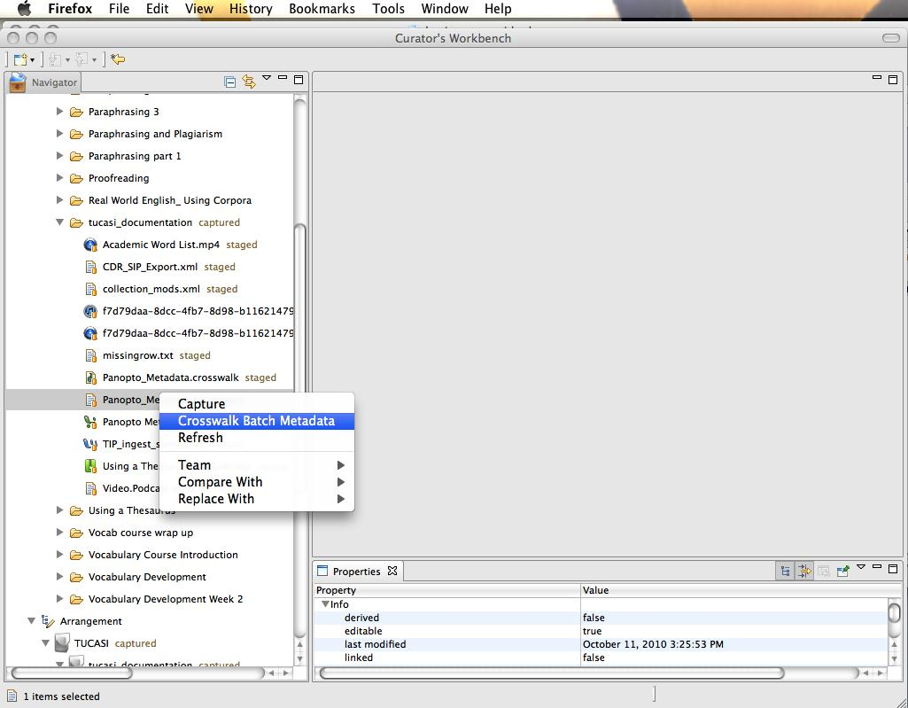
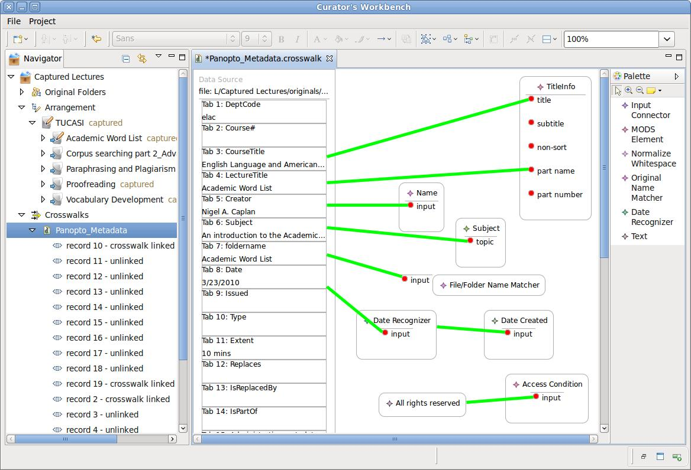

Crosswalk Tabular Metadata to MODS
The Workbench is designed to facilitate the staging of large
batches of objects with custom supplied metadata. The crosswalk tool is
the key to mapping user-supplied metadata fields to MODS elements. It
allows you to define how each MODS record is created, which elements
are used and where they come from in the source metadata.
- To start you must have your supplied metadata in
a delimited text file. This means that each record will be on a
separate line in a text file. The fields in each record will be in a
consistent order and separated by a special character, such as a comma or a TAB.
- In the toolbar, press the New Wizard button on the left.
- Select "Metadata Crosswalk" and press "Next".
- The Crosswalk Wizard will open. You may leave the default
settings on the first screen and click "Next" to continue.
- Hit "Browse" and select the metadata file. (The character encoding of your
file will probably be detected, but you can also set it manually.) Click "Next".
- On the data preview screen, you can try different delimiter values
until you are happy with the way the Workbench will interpret your
metadata file. When satisfied, click "Finish".
- Now the Crosswalk Editor will open, showing you the canvas on
which you can map delimited metadata to MODS.

Figure 4. Linking to tab-delimited metadata file.
To crosswalk tab-delimited metadata to MODS elements
- Click on "XML Element" in the tool palette to the right of the canvas.
Now click on the canvas to drop an XML Element into your crosswalk. A
separate window will open displaying the range of MODS elements available.
Select an element (e.g. TitleInfo or Name) and click "OK".
- Some elements (e.g. name) have sub-elements available. In
these cases, click on "XML Element" again, then click an element already
on the canvas. A pop-up will let you to pick a sub-element.
For example, "name" can be refined to "namePart", "displayForm", etc.).
- Click on "Input Connector" in the palette. Now click and drag a line from
a MODS element value (e.g. the value node inside of a title element) to the
corresponding column on the left in the crosswalk file. NOTE:
the arrow on your cursor will prompt you where you need to click. If
there is a circle with a cross through it, you cannot add an input
connector there. The same thing will happen to direct you where to
click on metadata crosswalk file on the left.
- The final ingredient in any crosswalk is the File/Folder
Name Matcher. This matches up the file names found in the delimited metadata
with the actual file or folder objects you capture. Drop a File/Folder Name Matcher
onto your canvas. Then use an Input Connector to connect the matcher to the
metadata field on the left that contains file or folder names.
Once the connectors are linked, there will be a green line between the
MODS element and the crosswalked metadata. Link as many MODS elements as you
like. When you save a crosswalk it will automatically run. The resulting MODS records
will become part of the METS manifest that the Workbench maintains.
You can see MODS records by highlighting any part of the arrangement in the project
navigator. When highlighted, any MODS records will appear under the "Description" tab within
the Properties view in the bottom-right pane. Sometime MODS records are generated that do not
get matched with a file or folder. These records are listed, along with the rest, when you expand
the navigator tree beneath a crosswalk file. The link status of each record is displayed and you
can preview the records in the Properties view.
If there is no file or folder reference in your delimited metadata, you can choose to link
records to objects manually. To do this, first run the crosswalk. Then review the records by
expanding the crosswalk file in the project navigator. To link a record to an object, simply drag
the record and drop it on the right part of the arrangement in the project navigator. The record will
be associated with the object. The record will then show up as "user linked".

Figure 5. Linking MODS elements to tab-delimited metadata
elements
Dictionaries are an advanced feature of the workbench that make crosswalks much
easier to create. See Data Dictionaries.